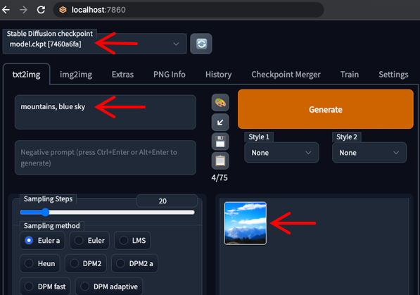

Stable Diffusion: Educational Edition
(A Simple Tutorial to Install Stable Diffusion on Computers)
Mac, Windows, Linux
#2
- Click Settings Icon in top right corner
- Click left menu "Resources" and change Memory to 12 GB
- Click "Apply and Restart" button

- When finished, close Settings from top right "X" button
- Minimize Docker Desktop
#4
- Open Finder, go to Downloads
- Right-click Folder "stable-diffusion-webui-docker-master"
- Click "New Terminal at Folder"
#5
-
Enter command:
docker compose --profile download up --build
- Wait for below text (probably several minutes)
-
If you DON'T have NVIDIA GPU or DON'T know, enter command:
docker compose --profile auto-cpu up --build
-
Else if you DO have NVIDIA GPU, enter command:
docker compose --profile auto up --build
- Wait for below text (probably several minutes)
#6
-
Open browser URL:
http://localhost:7860/
- Select Checkpoint
- Enter Prompt text
- Click Generate button
- Wait for image to appear (may take several minutes)

- Congratulations!
#7
After Successfull Install
- To start and stop Stable Diffusion...
- Open Docker Desktop
- Click expand icon next to "webui-docker"
- Click name "auto-cpu-1"
- Click top right Start/Stop button
- URL ready when text visible
#8
Increase Performance
- Add more CPU/RAM in Step #2